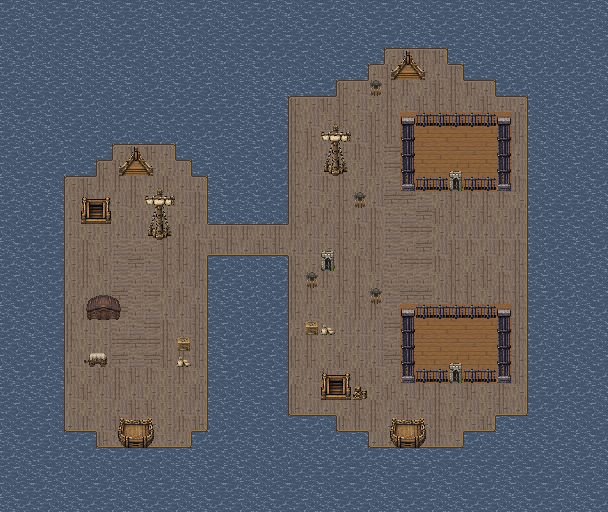
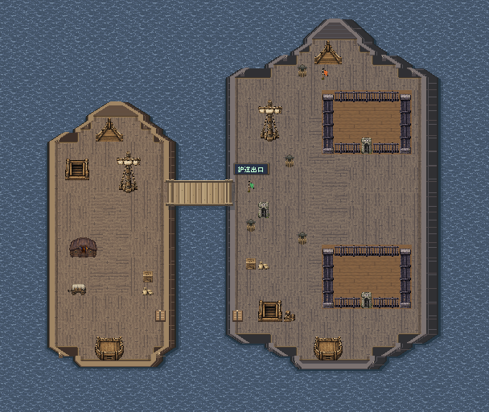
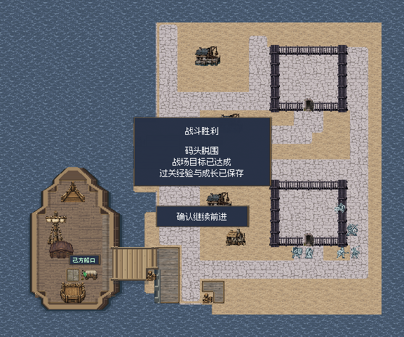

地图美术审阅 / 2026.11.09已接入游戏
船战地图 · 船体重绘对照
F21、F22、S21 的双船和 F31 的单船靠岸已接入游戏。全图沿用原有通行格，新增船舷、船体厚度和独立跳板。右图取自当前 Godot 运行版本，实战截图取自本轮试玩存档。
F22 押送舰救援


船体与周围空间
接应小船用暖木，押送舰用深灰木与较厚的舷板。囚栏、桅杆和舱口留在原来的甲板上。
登船路线
上方主跳板开局可走。下方两侧只露出收起的连接件，中间留海水；放下后才会出现第二条路。
查看这张图的实战截图

11 月 9 日船体接入试玩
- 两套独立的战前存档分别试玩。四关在两轮中都正常胜利并返回大地图。
- 核对了各跳板、岸边接点和旁侧水面。F21 两条跳板的回避加成仍为 20。
- F22 两轮都放下了备用跳板。五格从海面变为可走甲板，存档重读后状态一致。第二轮另用键盘让艾琳从押送舰踏上了备用跳板。
- F31 两轮均打开北院、南院的封锁，两组伤者都从西南船口撤离。
通过 Godot 战斗界面的键盘输入跑完两轮。查看回合与截图记录
查看盘点依据与其他涉船地图
- F21、F22、S21 各有两块可战斗的船甲板。S21 另有一条通往陆地的跳板。
- F31 左下是一艘接应船，另一端是海峡城的固定码头。
- F26 的两艘居民船是沿水路移动的小艇。F43、F44、S42 用到小艇摆件。F25 和 H22／H23 是港口或固定栈桥。
对照图按每格 16 原生像素绘制。舷板伸进水面的部分表现船体厚度。对照保留原船内面积、通行格、机关坐标和撤离点。F22 的接入前开板图为旧版机关状态预览，接入后开板图取自本轮操作机关后的战斗存档。